Galaxias en el computador: simulaciones numéricas
La evolución de una galaxia es demasiado compleja para resolverla a mano. Se traslada a un computador: se escriben las recetas de la física que entendemos, se dejan correr en el tiempo y se comparan las predicciones con las observaciones. Esta clase recorre cómo se construye una de estas simulaciones — desde la integración numérica más básica hasta las grandes simulaciones cosmológicas — y, sobre todo, cómo saber cuándo creerle.
Una galaxia es un sistema dinámico con miles de millones de estrellas, gas que se calienta y enfría, polvo, materia oscura y un agujero negro central. No hay solución analítica cerrada para todo eso. La estrategia es la misma que en cualquier problema de ingeniería intratable a lápiz: discretizar y simular. Uno codifica las leyes físicas que cree entender (gravedad, hidrodinámica, formación estelar, supernovas), las propaga paso a paso en el tiempo, y luego confronta el resultado con el universo real. El bucle de fondo —modelar → predecir → comparar → corregir la receta— es exactamente un ciclo de validación de modelos. Para alguien de informática, esta clase es un curso exprés de métodos numéricos, escalabilidad y convergencia aplicado al universo. Cerramos el curso de galaxias entendiendo no solo qué predicen estas simulaciones, sino qué tan lejos podemos confiar en ellas.
¿Por qué simular galaxias?
El juego: qué hago en el computador vs. qué observo de verdad.
El tema engloba en realidad todo lo demás del curso. La evolución de galaxias es un problema complejo que es difícil desarrollar analíticamente por completo, así que se acude al computador. La idea central: uno no puede modelar el universo átomo por átomo, así que introduce simplificaciones macroscópicas — "recetas" que resumen la física que entendemos. Esas recetas generan predicciones, y esas predicciones se comparan con las observaciones.
El "juego", como lo llama el profesor, es contrastar lo que uno hace en el computador con lo que de verdad observa, y usar la discrepancia para corregir las recetas. Es un bucle iterativo: cada vuelta, la física modelada se acerca un poco más a la realidad.
Es el ciclo clásico de simulación científica + validación: un modelo con parámetros, un conjunto de datos de referencia (las observaciones) y una métrica de discrepancia. La "receta" es el modelo; "mejorar la receta" es ajustar el modelo hasta que reproduzca los datos. La diferencia con un fit ingenuo es que aquí las reglas son físicas y deben generalizar, no solo interpolar el set de entrenamiento.
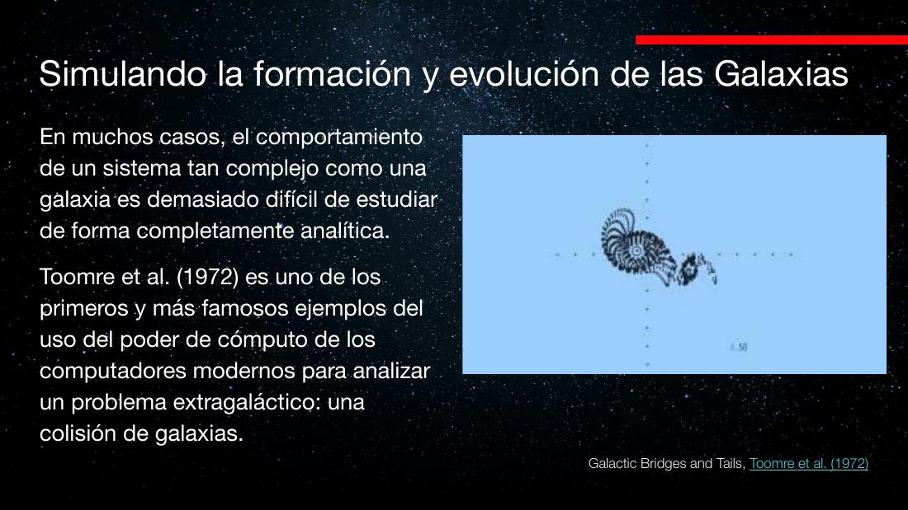
Toomre & Toomre (1972): la primera película
Puentes y colas de marea como producto de la gravedad.
El artículo se llama "Galactic Bridges and Tails" y tiene casi 3.000 citas. Su tesis, simple de enunciar pero revolucionaria en la época: los puentes y colas (bridges and tails) que se observaban en algunas galaxias son el resultado de encuentros cercanos entre galaxias. Los hermanos Toomre lo hicieron casi como proyecto de garage, usando computadores avanzados para la época.
La tecnología no permitía dibujar gráficos como uno quisiera: los "puntos" de la galaxia eran números impresos en placas transparentes. Tenía una ventaja inesperada — al moverse, cada número seguía identificando a su partícula, así que se podía rastrear dónde terminó algo que partió en otro lugar. Apilando placas se armaba una película. Una de las primeras animaciones de evolución galáctica.
El "tiempo" que aparece en esas simulaciones tempranas no necesariamente son millones de años; probablemente son solo frames. El profesor advierte: "no confiaría en las unidades de tiempo", es una simulación demasiado temprana. Un recordatorio de que un número en pantalla no es un dato físico hasta que se calibra.
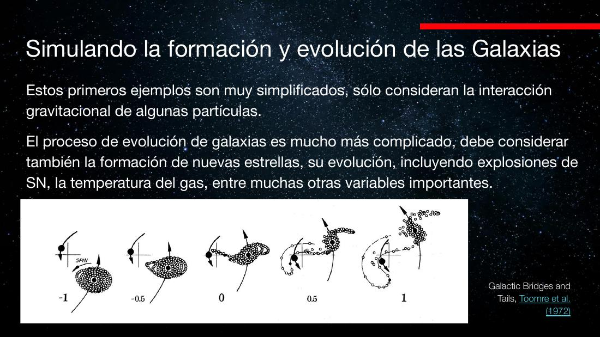
La distinción de masas que aparece aquí se usará todo el curso:
- Minor merger: interacción entre un objeto grande y uno mucho más pequeño (la galaxia chica es prácticamente "tragada"). Son colisiones más rápidas.
- Major merger: razón de masa cercana a . Ambos objetos se desarman; el efecto es dramático. Las escalas de tiempo son de 1.000–3.000 millones de años.
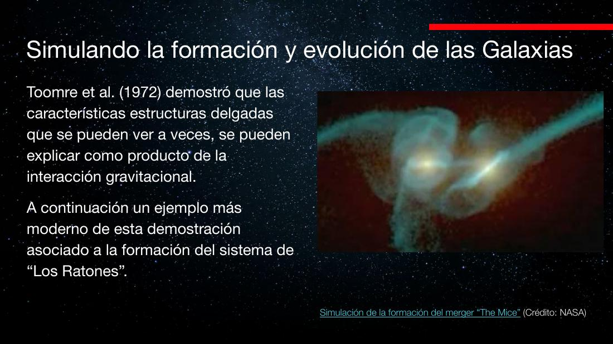
¿Qué hace el computador? Integración numérica
Discretizar el tiempo y avanzar a pedacitos, como una película.
El corazón de todo es simple: discretizar el tiempo y tratarlo como una película que avanza en pasos . El caso más sencillo: una partícula con velocidad constante en el eje X. Como la velocidad es la variación de posición en el tiempo,
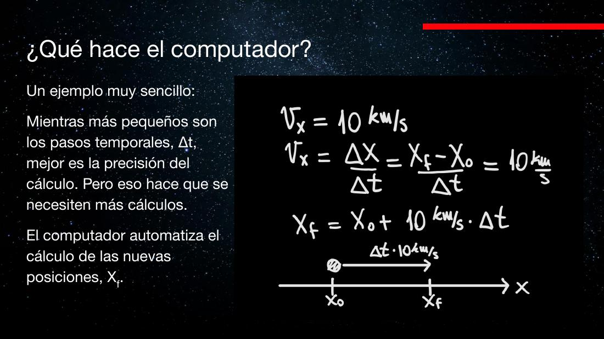
El caso realista de una simulación gravitacional agrega la fuerza. Con mecánica clásica (la mayoría de estas simulaciones no usan relatividad: poca ganancia, mucha complicación), Newton da , con y . La fuerza entre dos masas es la gravedad de Newton:
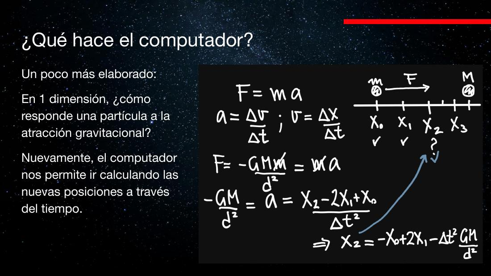
Es el corazón de cualquier integrador de EDO: . Euler explícito es y acumula error y diverge con pasos grandes; por eso en gravitación se usan esquemas simplécticos (Verlet/leapfrog) que conservan mejor la energía. El costo de fuerzas ingenuo es (cada par); los códigos reales lo bajan a con árboles (tree codes) o mallas (PM). Aquí "resolución temporal" = tamaño del paso, exactamente como un solver numérico.
La receta general: materia oscura primero, gas después
Dos componentes muy distintos, dos niveles de dificultad.
Para simular la evolución de una galaxia "de verdad" (entre comillas) se sigue una receta. Se parte con una simulación tipo N-cuerpos de la materia oscura, y encima se agrega el gas.
¿Por qué la materia oscura primero?
Porque domina la masa: hay unas más materia oscura que materia ordinaria. Lo que haga la materia oscura es lo que manda gravitacionalmente. Y es la parte "sencilla": la materia oscura solo interactúa por gravedad. Sus partículas no chocan (un choque es una interacción electromagnética, y la materia oscura no la tiene). Por eso una simulación de pura materia oscura es como la de Toomre, pero sin colisiones.
El gas hace de todo: se calienta, se enfría, radía, se comprime, forma estrellas; las estrellas evolucionan y explotan; aparece un agujero negro que afecta el gas… Toda esa física hay que codificarla en recetas. La gravedad es la parte fácil; la hidrodinámica + astrofísica del gas es la parte de verdad complicada.
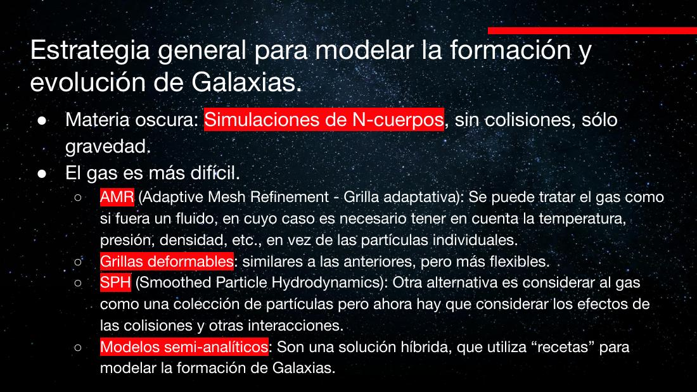
Las cuatro familias para el gas:
- AMR (Adaptive Mesh Refinement): el gas como fluido en una grilla que se refina donde hace falta.
- Grillas deformables: como AMR, pero las celdas además cambian de forma.
- SPH (Smoothed Particle Hydrodynamics): el gas como una colección de "partículas" difusas con propiedades.
- Modelos semi-analíticos: no producen películas; solo aplican recetas ("cuando se cumple esto, se forman tantas estrellas") y llevan la contabilidad de gas, estrellas y supernovas en el tiempo.
Dos familias según la escala
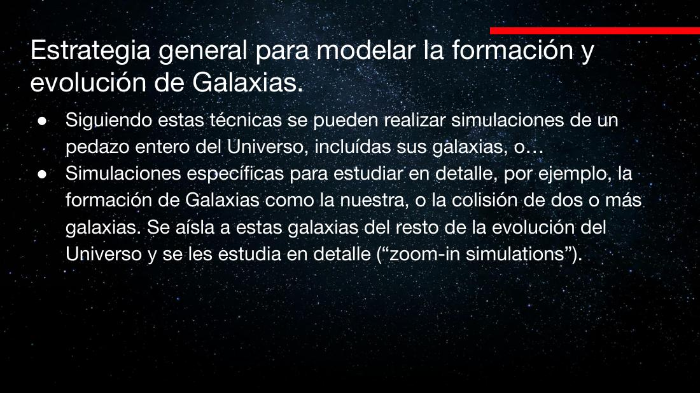
El problema de escalas: en un pedazo grande del universo no caben a la vez el volumen enorme y los detalles chiquititos — hay demasiados órdenes de magnitud entre ambos. Por eso existen las dos familias, y combinándolas se arma la película completa: la cosmológica da el contexto; el zoom da el detalle.
Es el dilema clásico de cobertura vs. resolución bajo presupuesto de cómputo fijo. La simulación cosmológica es como renderizar todo el mapa a baja resolución; el zoom-in es hacer level-of-detail sobre la región de interés. AMR es literalmente un quadtree/octree adaptativo: gastas memoria y FLOPs donde hay gradiente, no en el vacío.
Materia oscura: simulaciones de N-cuerpos
De un universo homogéneo a la telaraña cósmica.
La base de todo. La materia oscura solo siente gravedad (Newton, ), así que la simulación es "sencilla": partículas con masa que se atraen, sin colisiones. La expansión del universo también se incluye. Lo notable es el resultado: partiendo de una distribución casi homogénea a alto redshift, la gravedad amplifica las pequeñas inhomogeneidades hasta formar la estructura a gran escala: vacíos, filamentos y, donde se cruzan los filamentos, cúmulos.
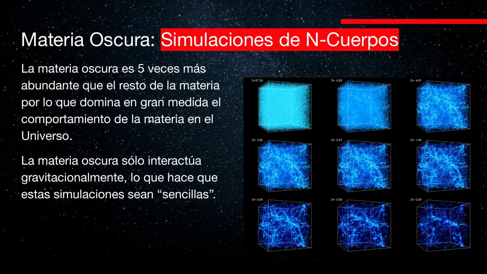
Sí — la materia oscura interactúa con cualquier cosa que tenga gravedad, incluyéndose a sí misma y a la materia ordinaria. En una simulación de pura materia oscura solo vemos su autointeracción gravitacional. La materia ordinaria también tira de ella, pero como es solo un quinto de la masa, su efecto sobre la evolución global es menor. Por eso vale la pena correr una simulación solo de materia oscura como base.
El modelo cosmológico estándar exige que sea materia oscura fría (cold dark matter): sus partículas se mueven lento (no relativista). Si se movieran cerca de la velocidad de la luz, no podrían aglomerarse en la telaraña que observamos. ¿Cómo se sabe? Precisamente comparando estas simulaciones con el universo real.
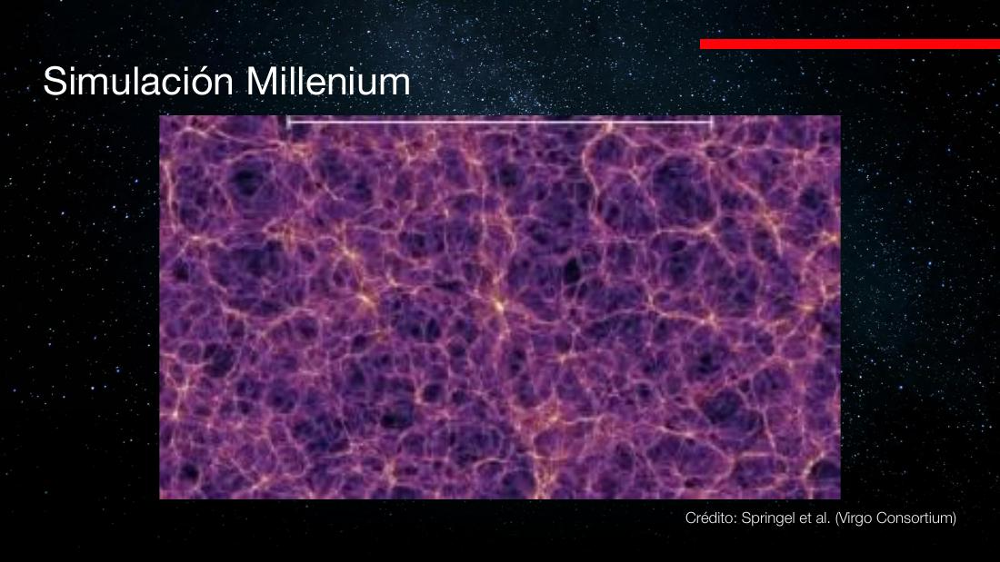
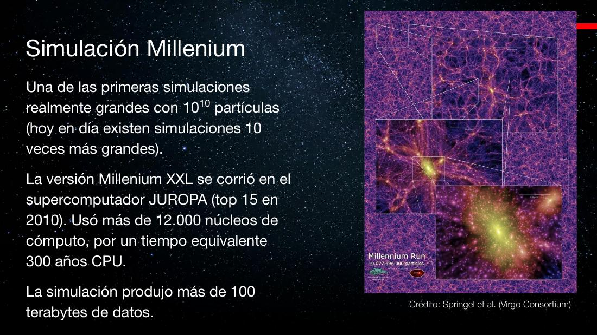
Esos TB son comparables a lo que genera un survey real (el SDSS produjo del orden de 60 TB). Explotar los datos de una simulación se vuelve tan difícil como explotar observaciones: hay regiones del resultado que nadie ha mirado. "Hacer observaciones de la simulación" es toda una rama del estudio.
Agregando el gas: AMR, grillas y SPH
La física difícil, encima de la materia oscura.
Sobre la simulación de materia oscura se espolvorea el gas. El gas sigue a la materia oscura por gravedad, pero hace cosas interesantes — y las hace sobre todo donde hay gradientes de densidad (paso de alta a baja densidad). No vale la pena gastar cómputo en regiones casi vacías y "fomes"; conviene gastarlo donde está pasando algo.
AMR — grilla adaptativa
La idea de AMR (Adaptive Mesh Refinement): no simular átomo por átomo, sino dividir el espacio en celdas (cubos, en 3D) y, dentro de cada celda, modelar propiedades macroscópicas: densidad, temperatura, presión. La presión de una celda interactúa con la de las vecinas (transferencia de materia). Si la densidad de una celda sube mucho, el gas está colapsando y forma estrellas; esas estrellas evolucionan, explotan y le devuelven energía y temperatura al gas. Donde pasan cosas interesantes, la grilla se hace más fina.
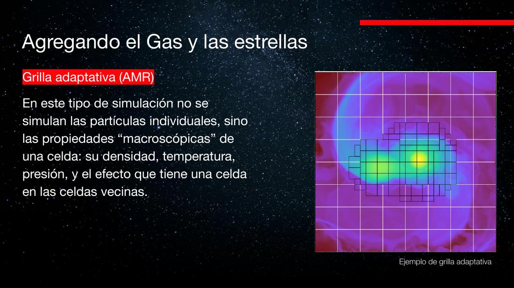
Grillas deformables
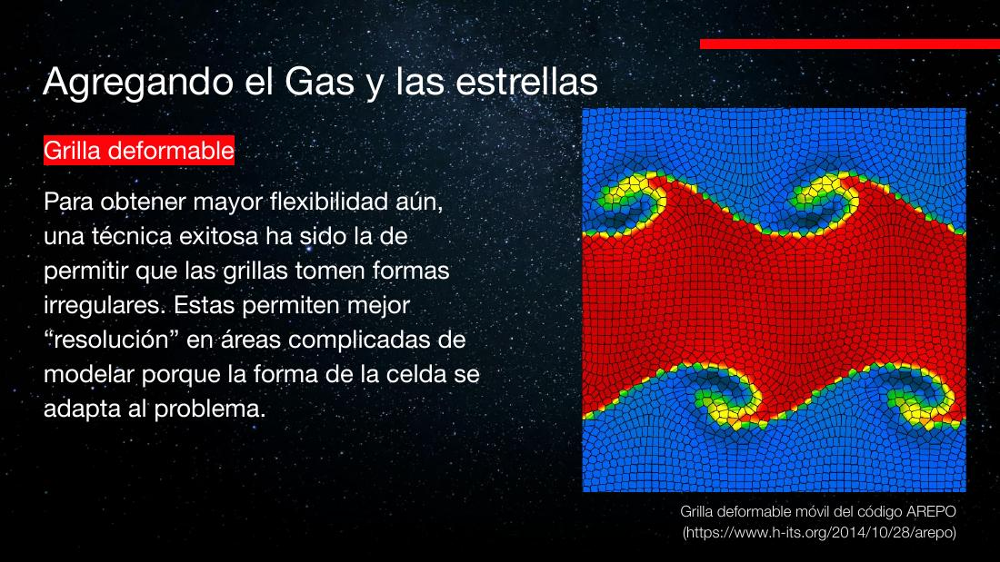
AREPO y compañía se escriben en lenguajes cercanos a la máquina (Fortran, C): más áridos de programar, pero muy eficientes de ejecutar — se ahorra tiempo de cómputo a costa de tiempo de programación. Muchos son abiertos (p. ej. GADGET): uno puede bajarlos, poner condiciones iniciales y correr una simulación en su propio computador. La forma de la grilla se redefine durante la corrida: un paso extra de "recalcular la plantilla" en cada iteración.
SPH — partículas de fluido
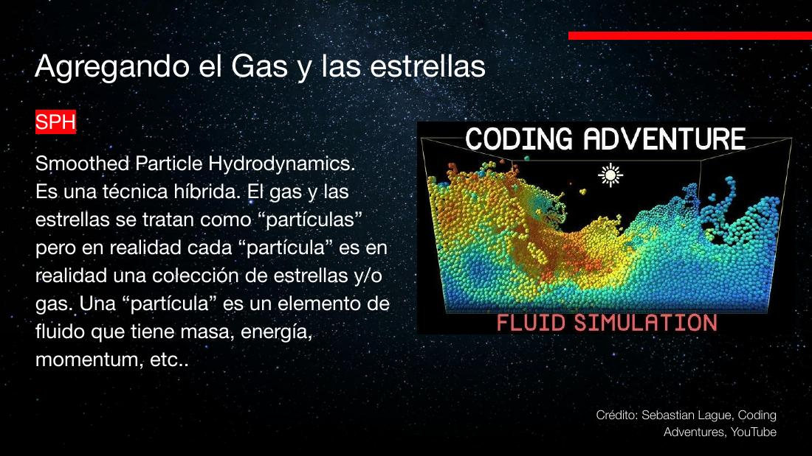
La gran ventaja de SPH en astronomía: la "partícula" lleva mucha más información que su masa y posición. Contiene una colección de estrellas con su edad y distribución de colores, gas con su temperatura y densidad, y polvo. Como las estrellas evolucionan, la partícula emite luz (de una población estelar con cierto espectro), lo que permite "ver" la galaxia simulada. El mínimo para que sea SPH y no solo N-cuerpos: posición y masa más distinción gas/estrellas y, al menos para el gas, temperatura y densidad.
AMR vs. SPH es Euleriano (malla fija al espacio) vs. Lagrangiano (resolución que sigue a la masa) — el mismo dilema que en gráficos entre simular fluidos con grid o con partículas. La "partícula" SPH es, en términos de datos, una struct rica que arrastra un estado completo; trazar su evolución es propagar ese estado y, además, su emisión (rendering físico) para comparar con observaciones.
Resultados zoom: elípticas y Vías Lácteas
Lo que aprendemos cuando seguimos una galaxia en detalle.
Cómo se forma una galaxia elíptica
Una simulación zoom de la colisión de dos discos espirales (en el espíritu de Toomre, pero con gas, estrellas y materia oscura). Al principio se forman de nuevo las colas de marea y puentes. Luego ocurre algo clave: el feedback. El núcleo galáctico activo (AGN) y las supernovas expulsan el gas volando fuera de la galaxia. El resultado final, visto desde dos ángulos (para confirmar que es esférico y no un disco), es un objeto esferoidal y casi sin gas ni polvo.
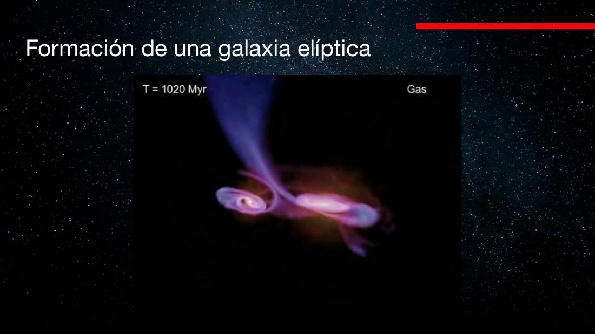
Si no hubiéramos modelado el gas, no entenderíamos que esto es una elíptica. Una propiedad definitoria de las elípticas clásicas es que son viejas: dejaron de formar estrellas. ¿Por qué? Porque no tienen gas (salió volando o se calentó). Sin trazar el feedback del gas, pensaríamos que sigue formando estrellas. Así, una simulación nos enseña un camino para formar elípticas — algo que de otra forma no podríamos visualizar.
FIRE y Eris: zoom de última generación
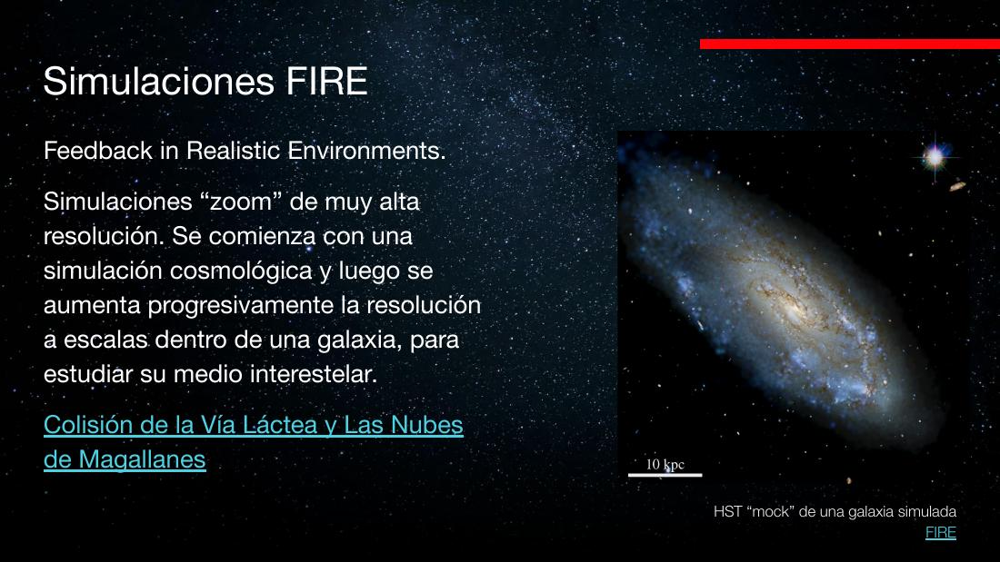
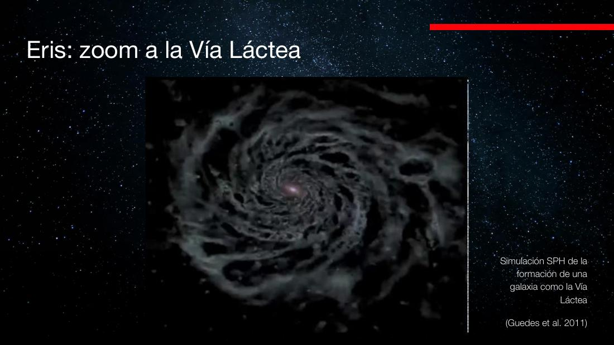
Si esa simulación se parece a la Vía Láctea, entonces nuestra historia está plagada de colisiones. Y deberíamos ver sus reliquias: las colas de marea visibles en el cielo (p. ej. la cola de Sagitario) son vestigios de interacciones pasadas. Dato curioso: dos tercios de las espirales tienen barra — una estructura común, aunque transiente.
Simulaciones cosmológicas: EAGLE e Illustris
Un pedazo grande del universo que reproduce lo observado.
Pasando del zoom a lo global: las dos simulaciones cosmológicas más importantes hoy son EAGLE e Illustris. Son grandes y, a la vez, exitosas reproduciendo propiedades observadas. Su gran logro común: reproducir la secuencia de Hubble — generar a la vez elípticas, espirales (con y sin barra) e irregulares, con las mismas reglas físicas en todos lados, sin adaptar la receta para cada tipo. Eso es muy distinto de un zoom que se ajusta para formar un objeto particular.
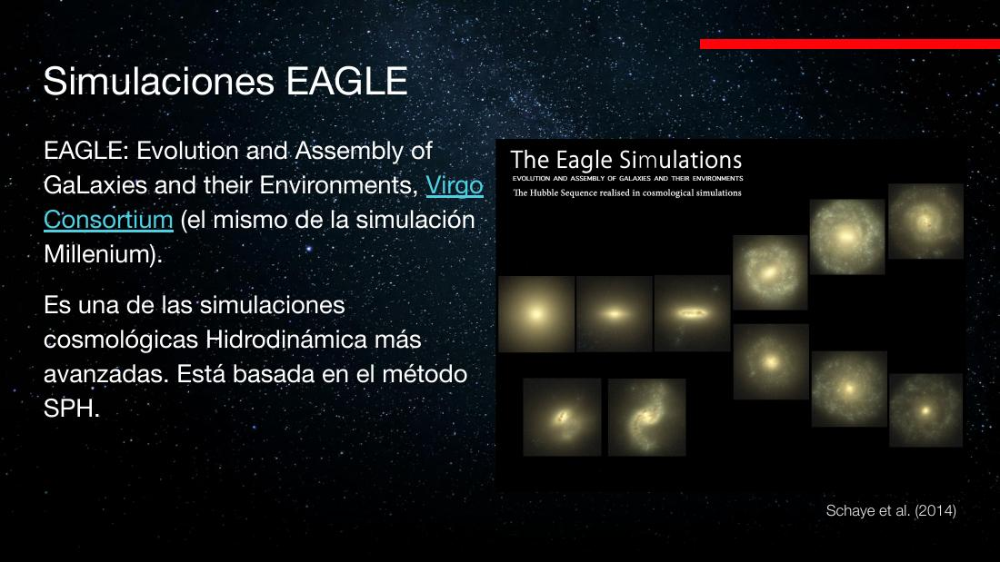
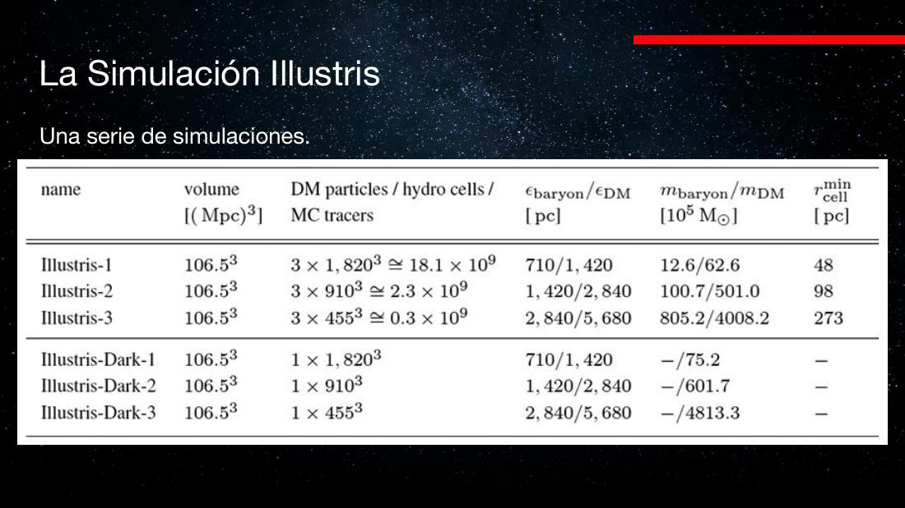
Illustris usa el código AREPO (grilla deformable y móvil: las celdas cambian de forma y de posición). Es tan grande que estudiarla es "casi una industria": hay regiones inexploradas, y observar la simulación se vuelve análogo a observar el universo. En su película se ve cómo una única supernova expulsa material más allá de la galaxia entera, y cómo se distribuyen los metales (elementos pesados) por el medio — incluso en zonas sin galaxias.
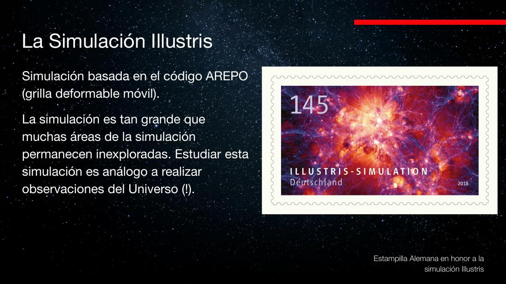
EAGLE e Illustris son comparables: cantidad similar de publicaciones asociadas. "Se hacen propaganda entre ellas". La diferencia muchas veces es quién hace los videos más vistosos. Ambas reproducen la secuencia de Hubble. Las simulaciones también alimentan proyectos como Galaxy Zoo (ciencia ciudadana de clasificación morfológica): a la gente a veces le muestran galaxias simuladas sin avisar — y si no las distinguen de las reales, es prueba del realismo de la simulación.
¿Cómo validar una simulación?
El mensaje más importante de la clase.
Una simulación numérica no es perfecta, y hay que entender por qué. Dos fuentes de limitación:
- Error numérico que se acumula. Recordemos la partícula del comienzo: si su velocidad cambia durante el paso , la proyección se desvía. Esos errores de discretización, sumados al hecho de que los computadores no usan números infinitamente precisos, se acumulan a lo largo de millones de pasos.
- Física simplificada. No se modela el universo átomo por átomo (no hay mecánica cuántica dentro): se toman propiedades macroscópicas de un pedazo de pc y se propagan. Hay pérdida de resolución espacial y temporal, y promedios de temperatura, edades estelares, supernovas, etc.
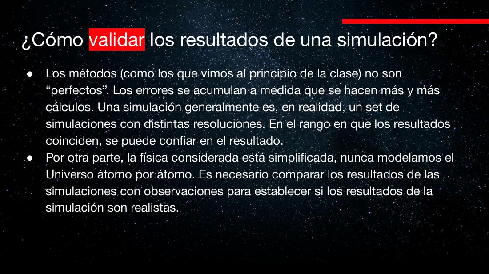
Dos preguntas distintas
Hay que separar dos cosas que suelen confundirse:
- ¿Es correcta la física? Solo se sabe comparando con la realidad. Si la "receta de Newton" estuviera mal, toda la simulación lo estaría — y eso únicamente lo revela la observación.
- ¿Es confiable el cálculo? Distinto: ¿calculé bien lo que quise calcular, más allá de si la receta es la correcta? Esto se contesta con convergencia de resolución.
Correr una de estas simulaciones no es correr una sola: es correr una familia a distintas resoluciones y comparar. Solo los resultados que se repiten entre resoluciones son confiables. Por eso Illustris tiene versiones 1, 2 y 3: no es redundancia, es la prueba de convergencia.
Es análisis de convergencia de malla (mesh/grid convergence), pan de cada día en métodos numéricos e ingeniería (CFD, FEM). Refinas la discretización; si la solución deja de cambiar, convergió. Y separa dos errores que un ingeniero conoce bien: verificación ("¿resolví bien las ecuaciones?", = convergencia) vs. validación ("¿son las ecuaciones correctas?", = comparar con el experimento/observación). Más resolución no garantiza más verdad: puede amplificar inestabilidades numéricas.
Las simulaciones cierran el curso porque integran todo lo visto: gravedad y materia oscura (estructura a gran escala), gas y formación estelar, mergers y colas de marea, feedback de supernovas y AGN, secuencia de Hubble, enriquecimiento químico. El computador permite visualizar lo invisible y experimentar con el universo — pero solo si entendemos sus límites: resolución finita, física simplificada y la necesidad de confrontar siempre con la observación. Con eso terminamos galaxias; el profesor nos cita de vuelta en el curso de observación.
Conceptos clave
Tabla de repaso rápido.
| Concepto | Qué es / valor | Por qué importa |
|---|---|---|
| Receta física | Simplificación macroscópica de la física en el código | Genera predicciones que se comparan con observaciones |
| Toomre & Toomre (1972) | "Galactic Bridges and Tails", ~3.000 citas | Colas/puentes = encuentros cercanos entre galaxias |
| Minor / major merger | Grande+chico / razón de masa ≈ 1:1 | Escalas de tiempo de 1.000–3.000 Myr (majors) |
| Discretización del tiempo | Avanzar en pasos como una película | Menor = más precisión, más cálculos |
| Integración (Euler/Verlet) | El núcleo de toda simulación N-cuerpos | |
| N-cuerpos | Partículas que solo sienten gravedad | Base para la materia oscura (sin colisiones) |
| Materia oscura primero | 5× más masa que la ordinaria; solo gravedad | Domina; es la parte "sencilla" y la base |
| Cold Dark Matter | Materia oscura fría (lenta, no relativista) | Solo así se aglomera en la telaraña observada |
| AMR | Grilla adaptativa; celdas más finas donde hay detalle | Gasta cómputo donde hay gradientes |
| Grilla deformable | Celdas cambian forma y posición (AREPO) | Resuelve estructuras de forma especial (Kelvin–Helmholtz) |
| SPH | Gas como "partículas" de fluido con propiedades | La partícula lleva gas+estrellas+T+ρ+edad y emite luz |
| Modelos semi-analíticos | Recetas + contabilidad, sin imagen | Llevan la cuenta de estrellas/gas/SN en el tiempo |
| Cosmológica vs. zoom-in | Pedazo del universo / región específica | Contexto (ambiente) vs. detalle de alta resolución |
| Millennium | partículas, >12.000 núcleos, >100 TB | N-cuerpos de referencia (Virgo Consortium) |
| Feedback | SN y AGN expulsan/calientan el gas | Clave para formar elípticas (sin gas → dejan de formar estrellas) |
| FIRE / Eris | Zooms de alta resolución (MW, elípticas) | Generan galaxias realistas con luz trazada |
| EAGLE / Illustris | Cosmológicas (SPH / AREPO) | Reproducen la secuencia de Hubble con física única |
| Resolución de celda | Illustris: 48–273 pc (la más chica) | Fino vs. galaxia (kpc), grueso vs. sistema solar |
| Convergencia de resolución | Resultado independiente de la resolución | Único criterio de confiabilidad del cálculo |
| Verificación vs. validación | Cálculo correcto vs. física correcta | Convergencia / comparación con observaciones |
| Artefacto numérico | Resultado que solo aparece a una resolución | No confiar; puede ser error amplificado |
Exámenes de práctica
10 exámenes de 5 preguntas (3 de alternativas autocorregibles + 2 de respuesta escrita).